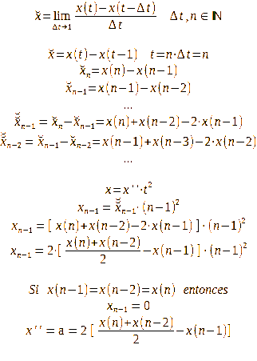

Desarrollo de una derivada con abstracción de la unidad física de la función resultante. Para ello, el incremento de tiempo se supone la unidad, permitiendo suponer el valor como iterador de esa unidad abstraída.
